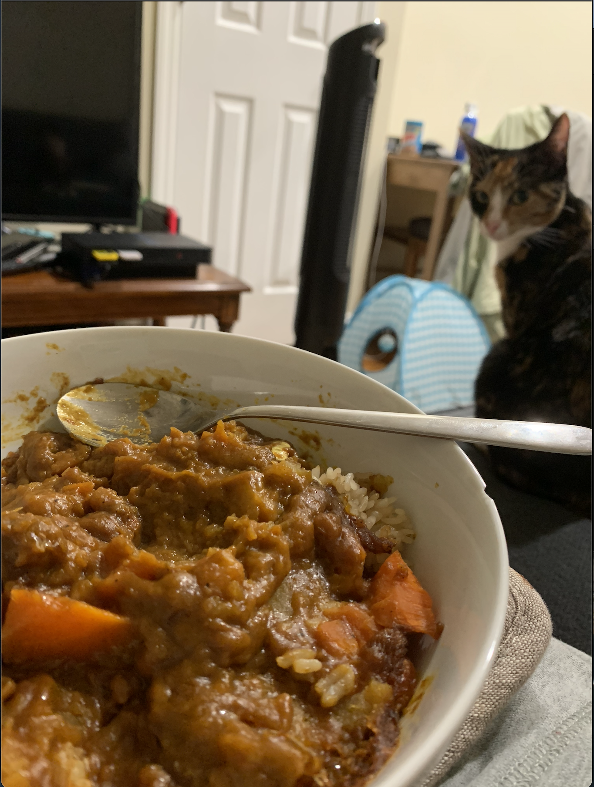

Japanese Curry

Japanese Curry -- easy to make at home!
Ingredients
- One box Japanese curry roux. (When I'm feeling lazy, I use Japanese curry roux from the box, but JustOneCookbook has a great homemade Japanese curry roux recipe!)
- 2 large carrots
- Potatoes (Note: I use 6 small red potatoes, Yukon will do)
- 2 onions
- 2 cloves garlic
- 1 small apple
- 1 knob ginger
- 1 Tbsp soysauce (Note: I like Kikkoman)
- 1 Tbsp ketchup
- 1 Tbsp honey
- 4 cups low- or no-sodium vegetable stock (or chicken/beef)
- 1.5 Tbsp neutral oil (I usually use a spray-on oil like Pam, but if you don't have one, any neutral tasting oil will do)
- Frozen seafood mix -- I like Trader Joe's brand, any non-fatty fish will do
- Salt and pepper to taste
- Japanese short-grain rice (according to how much curry you'll eat)
How to cook
- Rinse 1-2 rice-cooker-cups rice, and let sit for about 20 minutes. Then cook per manufacturer's instructions.
- Cut onions in half, then, with the cut-side on the cutting board, slice vertically. You should have long pieces of onion. Set aside.
- Scrub and peel potatoes and carrots. Cut potatoes in half. For the carrots, I use the rangiri method outlined on JustOneCookbook's website. Set aside.
- Peel the apple, and cut in half. Core it. Grate the apple using a grater, or finely chop (the apple will mostly dissolve in the curry anyway). Set aside.
- Use either a garlic press or a garlic grater for the garlic and ginger. Set aside.
- Using a large pot over medium heat, add your oil (or spray with Pam).
- Once the oil is shimmering nicely, add the onion. Cook the onion down until it just begins to caramelize.
- Add the grated garlic and grated ginger to the onions.
- Add the frozen seafood bag (as-is) to the pot. Cook until you can see the color return in the shrimp.
- Add the veggie stock.
- Add your grated or chopped apple, ketchup, honey, and soy sauce. My Japanese students told me that instant coffee was also a nice addition to curry. Some also liked chocolate (dark, of course).
- Add the carrots and potatoes.
- Simmer, with the pot covered, for about twenty minutes.
- When you can pierce a potato effortlessly, you can begin adding the curry roux.
- Turn off the heat, and put a block of the curry roux in a cooking spoon. Ladle the liquid into the spoon, and using a fork or a pair of chopsticks, mush up the roux block so that it's integrated. Repeat for the entire box of the curry roux.
- Turn heat back on, and simmer unconvered for about ten minutes.
- Test the curry at this point. Add salt to taste (for me, roughly 2 tsp).
Serving
- Serve curry with steamed rice.
Japanese curry is a favorite among many Japanese families, and tourists who come to Japan! In fact, it's so popular, that when I make it, my cat, Helga, looks on jealously as I won't give her any :-)

Back to all recipes